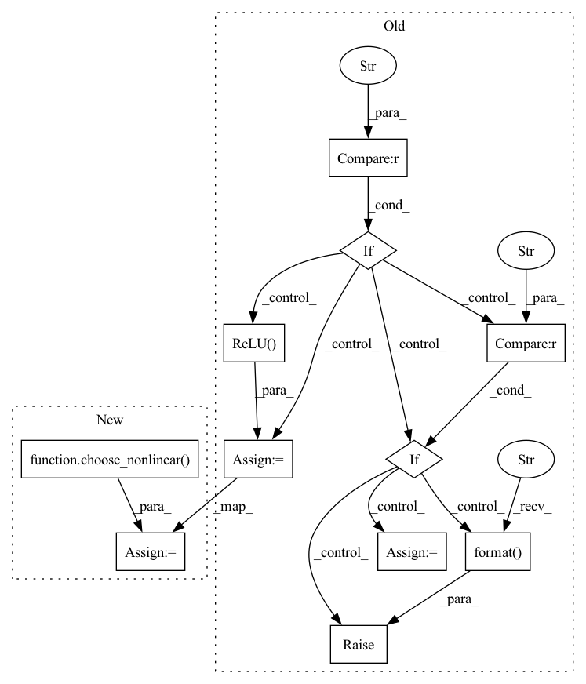

Pattern ID :10565

Before Change
self.linear = nn.Linear(in_channels, out_channels)
if self.nonlinear:
if self.nonlinear == "relu":
self.nonlinear0d = nn.ReLU()
elif self.nonlinear == "leaky-relu":
self.nonlinear0d = nn.LeakyReLU()
else:
raise ValueError("Not support nonlinear {}".format(self.nonlinear))
if self.dropout:
self.dropout0d = nn.Dropout(dropout)
After Change
self.linear = nn.Linear(in_channels, out_channels)
if self.nonlinear:
self.nonlinear0d = choose_nonlinear(nonlinear)
if self.dropout:
self.dropout0d = nn.Dropout(dropout)
In pattern: SUPERPATTERN
Frequency: 3
Non-data size: 11
Instances
Fragment ID: 36794449
Project Name: tky823/dnn-based_source_separation
Commit Name: 64531bda6a98db471a3bfec05b151120e4cbe9b6
Time: 2021-10-09
Author: 40362510+tky823@users.noreply.github.com
File Name: src/models/cunet.py
M Class Name: ControlDenseBlock
N Class Name: ControlDenseBlock
M Method Name: __init__(7)
N Method Name: __init__(7)
M Parent Class: nn.Module
N Parent Class: nn.Module
M File Name: src/models/cunet.py
N File Name: src/models/cunet.py
M Start Line: 520
M End Line: 527
N Start Line: 777
N End Line: 777
'>
Before Change
self.conv1d = nn.Conv1d(in_channels, out_channels, kernel_size, stride=stride, dilation=dilation)
if self.nonlinear:
if self.nonlinear == "relu":
self.nonlinear1d = nn.ReLU()
elif self.nonlinear == "leaky-relu":
self.nonlinear1d = nn.LeakyReLU()
else:
raise ValueError("Not support nonlinear {}".format(self.nonlinear))
if self.dropout:
self.dropout1d = nn.Dropout(dropout)
After Change
self.conv1d = nn.Conv1d(in_channels, out_channels, kernel_size, stride=stride, dilation=dilation)
if self.nonlinear:
self.nonlinear1d = choose_nonlinear(nonlinear)
if self.dropout:
self.dropout1d = nn.Dropout(dropout)
'>
Fragment ID: 36794445
Project Name: tky823/dnn-based_source_separation
Commit Name: 64531bda6a98db471a3bfec05b151120e4cbe9b6
Time: 2021-10-09
Author: 40362510+tky823@users.noreply.github.com
File Name: src/models/cunet.py
M Class Name: ControlConvBlock
N Class Name: ControlConvBlock
M Method Name: __init__(11)
N Method Name: __init__(11)
M Parent Class: nn.Module
N Parent Class: nn.Module
M File Name: src/models/cunet.py
N File Name: src/models/cunet.py
M Start Line: 666
M End Line: 673
N Start Line: 918
N End Line: 918
'>
Before Change
self.nonlinear = False
else:
self.nonlinear = True
if nonlinear == "relu":
self.nonlinear1d = nn.ReLU()
elif nonlinear == "tanh":
self.nonlinear1d = nn.Tanh()
else:
raise NotImplementedError("Invalid nonlinear function ({}) is specified.".format(nonlinear))
def forward(self, input):
x = self.fc(input)
After Change
self.nonlinear = False
else:
self.nonlinear = True
self.nonlinear1d = choose_nonlinear(nonlinear)
def forward(self, input):
x = self.fc(input)
x = self.norm1d(x)
'>
Fragment ID: 36794444
Project Name: tky823/dnn-based_source_separation
Commit Name: 4d1c92a7d043eae0825c8731cbc75f50cbc8f77c
Time: 2021-10-22
Author: delta9guitar97@gmail.com
File Name: src/models/umx.py
M Class Name: TransformBlock1d
N Class Name: TransformBlock1d
M Method Name: __init__(6)
N Method Name: __init__(6)
M Parent Class: nn.Module
N Parent Class: nn.Module
M File Name: src/models/umx.py
N File Name: src/models/umx.py
M Start Line: 448
M End Line: 455
N Start Line: 448
N End Line: 448